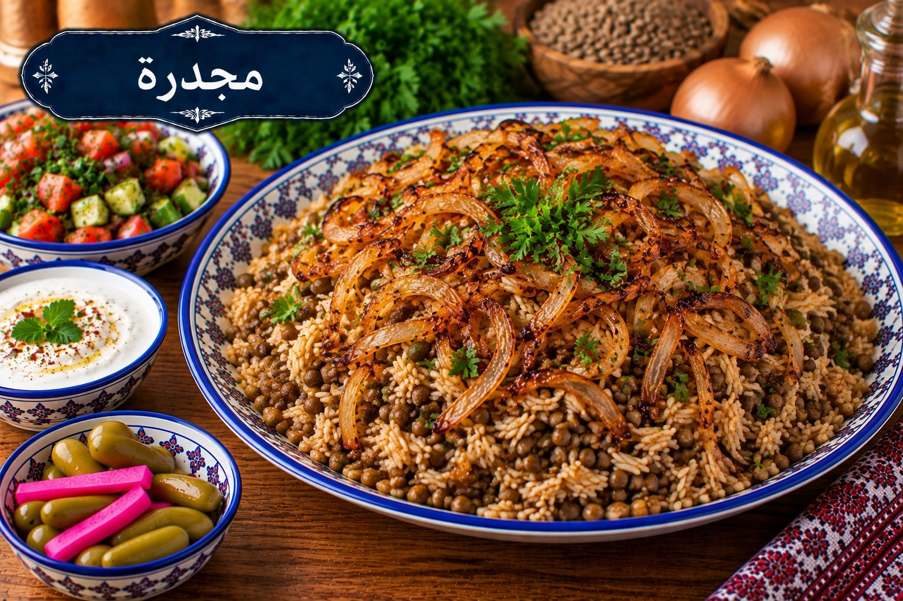

مجدرة
عدس وأرز ببصل محمر

مقادير مجدرة
- 1 كوب عدس بني
- 1½ كوب أرز متوسط الحبة
- 3 بصلات كبيرة شرائح
- ¼ كوب زيت زيتون
- 1¼ ملعقة صغيرة ملح
- ½ ملعقة صغيرة كمون
- ¼ ملعقة صغيرة فلفل أسود
- 4½ أكواب ماء تقريبًا
طريقة عمل مجدرة
- اغسلي العدس وضعيه مع 3 أكواب ماء. بعد الغليان خففي النار 15–20 دقيقة حتى ينضج نصف نضج.
- حمري البصل بزيت الزيتون على نار متوسطة ببطء حتى يصبح بنيًا ذهبيًا، ثم ارفعي نصفه للتزيين.
- اغسلي الأرز وانقعيه 15 دقيقة ثم صفيه وأضيفيه للعدس مع الملح والكمون والفلفل وما يلزم من الماء الساخن.
- بعد الغليان خففي النار جدًا وغطي القدر 18 دقيقة. أطفئي النار واتركيه 10 دقائق ثم فلّفيه وزيني بالبصل المحمر.